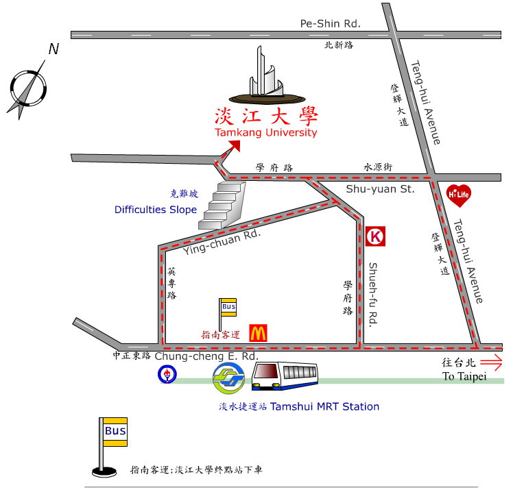

My Kitchen
美食首頁
菜單
我要訂購
聯絡資訊
全站滿千免運費 活動只到12/18 要買要快喔~
MY Kitchen
電話：02-2621-5656
地址：淡水區英專路151號
信箱：ficx@mail.tku.edu.tw
交通方式：
1.捷運：由台北車站搭乘淡水線捷運，到終點淡水站下車。
2.公車：由台北北門塔城街，或台汽北站對面的指南公車站牌下，搭指南客運（淡大至北門） 直達車到淡大即可，中間不用換車，票價三段票 45 元。
3.開車：開車－由台北走二乙省道到關渡接二號省道至淡水，到中正東路、學府路交叉口右轉，沿學府路直走即可至淡江大學。
